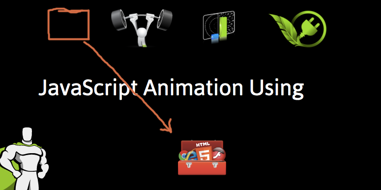

PlSight GreenSock anim ch2.3
HTML links order:
< jquery link >
< greensock link >
< myScripts.js >
< /body>
$(document).ready(function() {...}); in myScripts.js
.html
< img id="toolBox" src="images/tool-box.svg"/>
.js
$(document).ready(function() {
startTween();
});
TweenLite.to(<elem>, <time>, {attributes});
function startTween() {
TweenLite.to($('#toolBox'),
2.5, {
x: 300,
y: 260
});
}
nums are seconds. (not ms)
PlSight GreenSock anim ch2.4
HTML links order:
rotation
'alpha' = opacity
simultaneous movement
rotation: flips it on the Z-axis (NOT in 3D, but clockwise neg for counter-clockwise)
function startTween() {
TweenLite.to($('#toolBox'), 1, {
rotation: 720,
rotationX: 360
});
}
rotationX is on the X-axis that appears to flip in 3d like somersaults
combined with rotation, it looks like fips & twists.
Tomatoes GS101 ch1
Topics
TweenLite.to(elem, duration, {attrs});
jQuery & Javascript selector analogues
var header= $('header');
TweenLite.to(header, 1, {opacity: 0, y: 50});
var header = $('header'),
var header = document.getElementById('header');
h1 = $('h1'),
var h1 = document.getElementsByTagName('h1');
intro = $('.intro'),
var intro = document.getElementsByClassName('intro');
firstItem = $('li:first-child'),
var firstItem = document.getElementsByClassName('list')[0].firstElementChild;
secondItem = $('li:nth-child(2)'),
var secondItem = document.getElementsByClassName('list')[0].children[1];
thirdItem = $('li:last-child');
var lastItem = document.getElementsByClassName('list')[0].lastElementChild;
Tomatoes GS101 ch2
Topics
Manipulating CSS the CSSPlugin is necessary
LINK
.to()
.from()
.fromTo()
.set()
autoAlpha property
simultaneous and in succession
opacity vs autoAlpha
.fromTo() takes two {attr values}
TweenLite.fromTo(img, 5, {
opacity: 0
}, {
opacity: 1
});
.set() takes no duration because it simply offsets with no animation.
TweenLite.set(img, {
y: -50
});
Simultaneous
var h1 = $('h1');
var img = $('img');
TweenLite.from(img, 3, {y: -50});
TweenLite.from(img, 5, {autoAlpha: 0});
TweenLite.to(h1, 5, {y: -50, delay: 3});
TweenLite.from(h1, 5, {autoAlpha: 0});
rgba() and opacity work differently:
1. rgba() affects a single property, like color, background-color or border-color, of elements targeted by CSS and only of these elements.
2. Opacity affects all properties (the whole outlook) of targeted elements along with all their DOM tree children.
Tomatoes GS101 ch3 Easing
Topics
ease power0 ~ power5
ease plugin
gsap libraries link gsap/1.19.0/easing/EasePack.min.js
.config();
Topics
What is a timeline?
Relative Positioning in a timeline
Absolute Positioning in a timeline